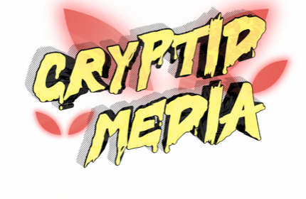
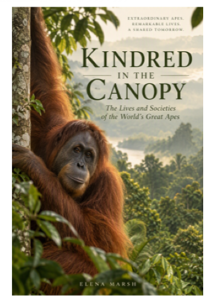

EME6208 · Project 1
Visual Design
One portfolio identity and two approaches to a great apes book cover: a handmade composition using original photography, and an AI-generated interpretation.
Cover study
Two ways to picture the great apes


Design notes
The process behind the work
Portfolio logo
For my logo, I opted to build one for my media portfolio as a whole. On the side, I am a photographer, I also do some videography projects. As far as the branding, I've used “cryptid” for a long time, with the alien/creature motif representing that.
In order to capture this eerie, nostalgic vibe, I paired glowing red background elements with desaturated yellow text framed in sharp black outlines. This high-contrast combination mimics the electric intensity of early internet cryptid sighting hoaxes and camera flashes, ensuring the logo jumps forward with an unmistakable, creature-in-the-night presence while remaining readable.
This design came together by combining the strengths of Affinity and Canva. I started in Affinity by layering a black alien graphic over a black oval. By merging them together on a transparent layer, I created a single unified graphic that I exported as an SVG file. From there, I moved into Canva to apply the colors and add the glowing light effect to the eyes. I also used Canva’s font features to build out a spooky, horror-themed typeface for the text. By focusing on transparency and clean outlines, I made a logo that functions well on its own across any light or dark background.
Handmade book cover
For my handmade book cover, I chose to use my own photography to highlight my passion for primates and show how closely they mirror human behavior. Apes have been my favorite animals for years, especially gibbons, because of their playful energy. Orangutans, on the other hand, perfectly demonstrate nature's intelligence. They are the ultimate example of observation-based learning, often watching humans use tools and then trying it themselves—like a wild female orangutan in Borneo who famously climbed onto a porch and began using a handsaw. I selected Paul Raffaele’s non-fiction book, "Among the Great Apes: Adventures on the Trail of Our Closest Relatives" (Raffaele, 2010), because it is a fascinating chronicle of his global travels to observe these animals.
To build the cover, I combined the strengths of Affinity and Canva. I started in Affinity by removing the backgrounds of my two orangutan photos, making sure to keep the original wooden structures intact to blend smoothly with a jungle backdrop. From there, I moved into Canva, where I imported both isolated images and positioned them to create the illusion of a single, unified scene.
AI-generated cover
For the AI version of the cover, I wanted to see how Microsoft Copilot would interpret the concept compared to my manual design. I gave the tool a straightforward prompt: “Generate a book cover for a nature book about great apes and their societies/life. Make it a cohesive image with at least one photo of an orangutan or gibbon in the foreground over a somewhat generic jungle backdrop. Create a catchy title and subtitle that represent this focus.” The final result completely caught me off guard because the layout and composition turned out surprisingly well.